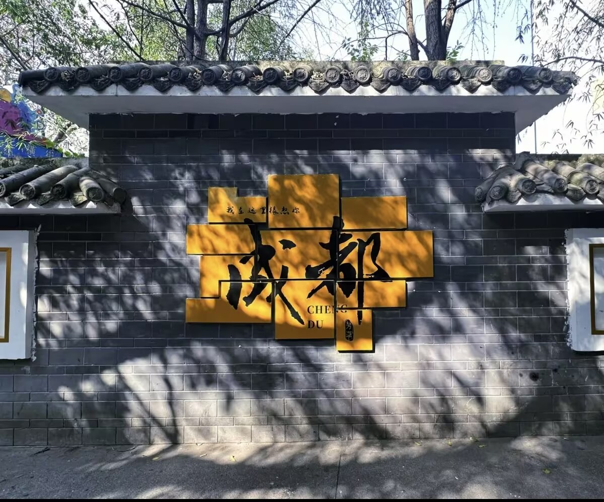

A GLIMPSE OF CHENGDU
跟着光影，走进成都
从晨光里的街巷，到灯火中的锦江，收藏这座城市的动人瞬间。
成都 · 一半烟火，一半诗意
WELCOME TO CHENGDU
成都，一座值得慢慢品味的城
成都，坐落于四川盆地西部，是一座浸润着三千年巴蜀文明的历史文化名城，也是充满活力的现代都市。这里有金沙遗址、武侯祠与宽窄巷子，诉说着古蜀的悠远故事；有麻辣鲜香的火锅、地道小吃和茶馆里的盖碗茶，盛放着热气腾腾的市井生活。清晨，去街巷间寻一碗担担面；午后，坐在竹椅上听茶香与闲谈；傍晚，沿锦江漫步，看灯火映亮城市。成都既有雪山远影与公园绿意，也有创意街区和蓬勃新潮。无论是追寻历史、品尝美食，还是放慢脚步感受日常，这座包容而温柔的城市，总能给旅人一个留下来的理由。
计划你的成都之旅